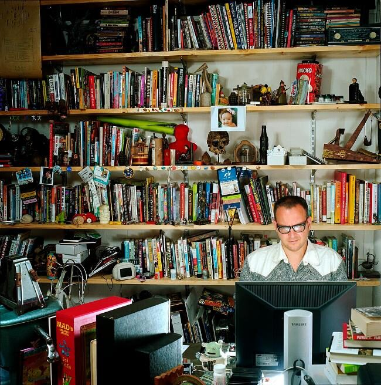
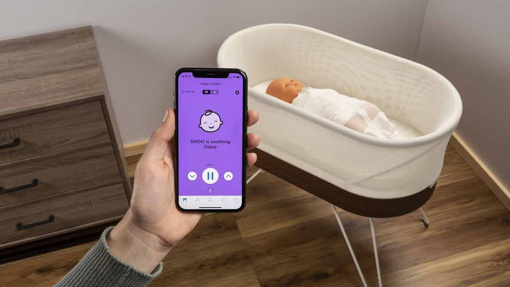
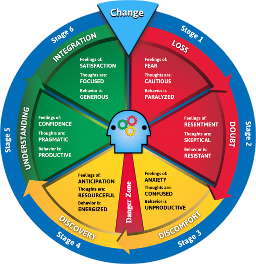
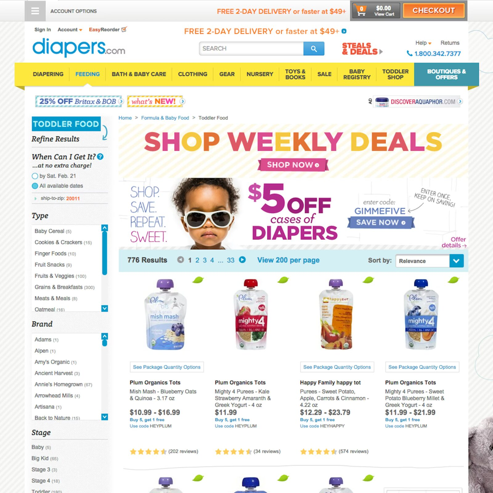
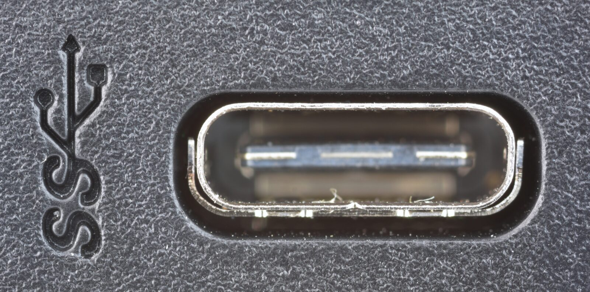
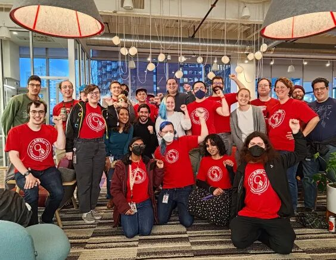

Book Presentation Samples
Book: Enshittification
Author: Cory Doctorow
Presenter: Jack Bandy
“Good” Version
Cory Doctorow (About the Author)
- Publishes fiction and non-fiction
- Advocate for digital rights
- Worked at Electronic Frontier Foundation
- Themes: user autonomy, corporate power

Why I Chose the Book
- Fun title
- I like other stuff by Doctorow
- Curious about the theory / framework
- Less jargony than other books
- Concrete examples
Questions I had before reading the book
- What are the key ingredients for enshittification?
- What are the details of this theory?
- What is the supporting evidence for this theory?
- How can companies reverse and/or slow enshittification?
- Why do people stay on crappy apps?
- What are the best next steps?
Interesting things I learned
- Amazon spent $200 million to drive Diapers.com out of business
- Interoperability can help prevent enshittification
- Companies often lock things intentionally
- “Turing-complete universal von Neumann machines”
- Network effects are a significant obstacle for people to quit or switch apps
- Doctorow does not think enshittification is inevitable
- “The Death of Competition Kills Regulation, Too”
- Rent-seeking is not the same as profit-seeking
- Goodhart’s law
Specific Examples
- The SNOO is $1,695 up front and then $20 a month
- “We don’t care. We don’t have to. We’re the phone company.”
- “We don’t care. We don’t have to. We’re Google.”
- Counter-twiddling
- Para
- tuyul

Have you seen any examples?
- Apps that get ruined after being bought out?
- Unnecessary or surprising subscriptions?
- Apps that should not be apps?
- Apps that “bait and switch”?
- Other crappy experiences?
Questions I had after reading the book
- Which regulatory changes are realistic in the near future?
- How will EU legislation play out?
- Will companies ever really prioritize the public good over shareholders?
- How do big companies get away with all this?
Actions
- Use open-source alternatives whenever possible
- Support artists and creators as directly as possible
- Support regulation
- Vote with your wallet
- Be mindful of your digital footprint

I recommend this book if you are…
- annoyed by social media and other apps
- care about privacy and digital rights
- wonder about planned obsolescence
- curious about how the internet initially formed and grew
- looking for action items to resist tech monopolies
“Better” Version
If Microsoft offered to buy your startup…
Doctorow on Microsoft
“The investors told me I was lucky, that I would get a great job at Microsoft out of this deal, even if I didn’t make any money from the sale. So I quit the company and went to work for EFF instead. The deal fell through, the investors got nothing, and 23 years later, I’m still at EFF.
Cory Doctorow
- Author of 15 novels and 6 nonfiction books
- Most of career at Electronic Frontier Foundation (EFF)
- His work has converged around one word…
Enshittification: How diapers.com went out of business

Enshittification: guess how much for a snoo!
What do we do?
Solution 1: Competition
Solution 2: Real Regulation
Solution 3: Interoperability

Solution 4: Worker Power

(end of sample)
Good vs. Better
Additional Presentation Tips
a b c d e f g
A B C D E F G
a b c d E f g
A b c. D e f g?
a b… C! d e f g
References & Credits
- GitHub source: https://github.com/jackbandy/ethical-issues-in-computing-uic/blob/main/docs/slides/example-book-presentation.md.
- Last modified and compiled October 28, 17:24h.
- Cory Doctorow, Enshittification: Why Everything Suddenly Got Worse and What to Do About It (Farrar, Straus and Giroux), ISBN 9780374619329; cover art from the publisher.
- Doctorow in his office: Jonathan Worth, 2009, via Wikimedia Commons, CC BY 2.0 (cropped on the quote slide).
- Doctorow quote, “The investors told me I was lucky…”: Jordan Yerman, “Interview with Cory Doctorow – Journalist, Activist, and Author”, CloudFest, March 13, 2025.
- SNOO photo: TBD. Pricing: “Should You Buy a Snoo Smart Bassinet for Your Newborn?”, Consumer Reports.
- Change Cycle wheel (“Actions”): stages from Ann Salerno and Lillie Brock, The Change Cycle (Berrett-Koehler); image TBD.
- Diapers.com screenshot and Amazon logo photo: TBD (Amazon logo is a trademark of Amazon.com, Inc.).
- Solution 1, “The 7 Biggest US Airlines” infographic: TBD.
- Solution 2, GDPR graphic: TBD. Bill, from Schoolhouse Rock! “I’m Just a Bill” (1976); drawing TBD.
- Solution 3, USB-C photos: TBD.
- Solution 4, logo, contract graphic, and member photo: Alphabet Workers Union-CWA; source posts TBD.


 Ethical Issues in Computing (CS 377)doethics.fun/slides
Ethical Issues in Computing (CS 377)doethics.fun/slides